pole at head height
180 ft
1.4 confidence
StepSafe · static mockups · no product code
A direction for the live map, the verify queue, and the hazard record. Institutional trust in the manner of Coinbase, hierarchy in the manner of Wise. Community, Scout, and hazard rows are ETA slips: a name, a distance, a confidence. Orange is reserved for hazards. Navy, blue, and signal blue do the rest of the work.
The same slip carries a hazard and a person. Scout shows up in the vote history as a role, a name, a distance, and a weight. There is no chat bubble.
180 ft
1.4 confidence
180 ft
1.00 weight
Native shell. Large title, bottom tabs for Live map and Verify queue, and hazard details pushed over the tabs. Same two destinations as the live product.
The responsive site. Browser chrome, header, and the two tabs across the top. The vote bar sticks to the bottom of the queue.
Left sidebar for Live map and Verify queue. The map and the hazard feed sit side by side. Hazard details is a record, with the map beside it.
One PNG for every surface, screen, and theme. The files are in shots/.
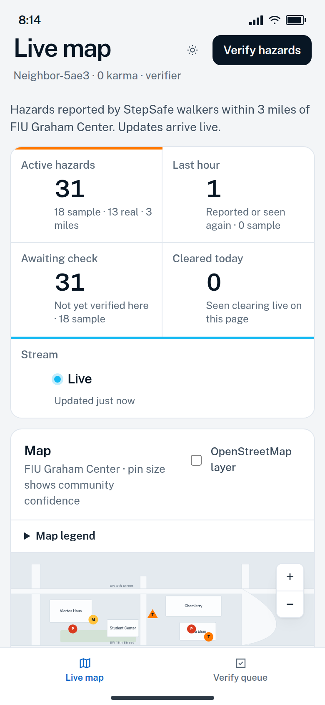
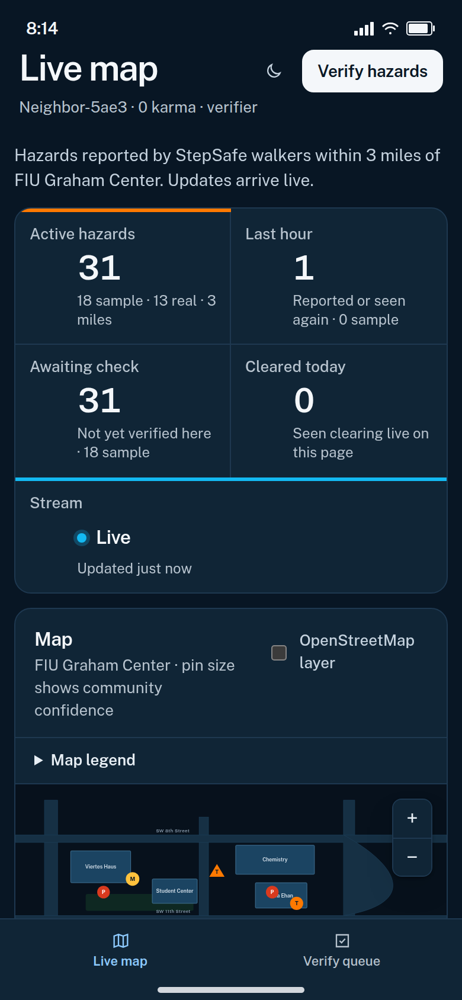
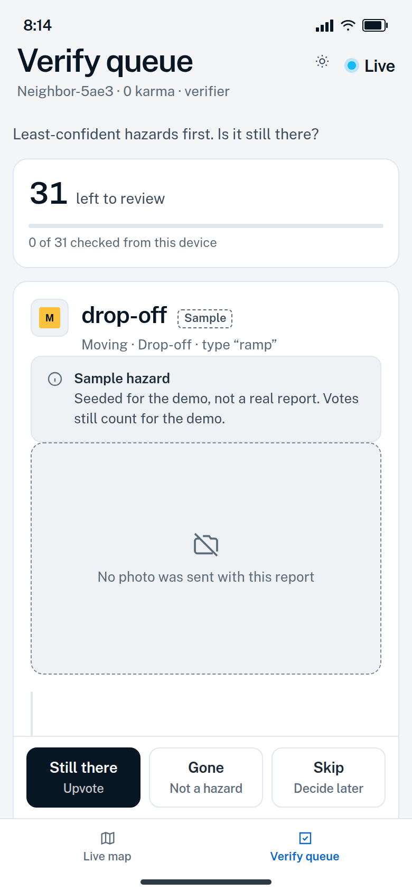
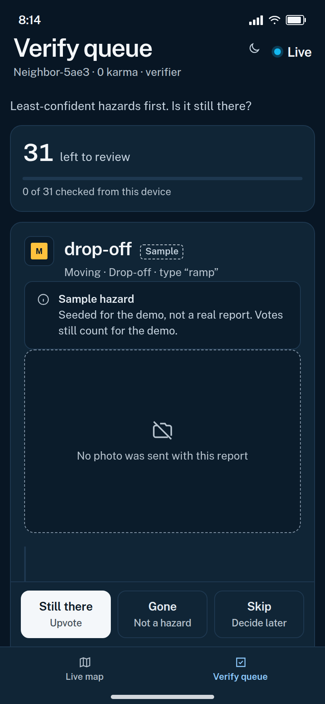
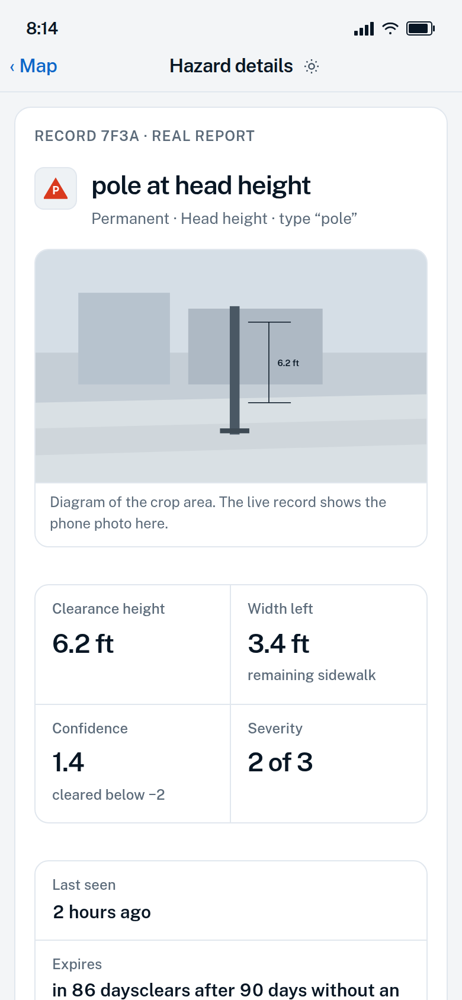
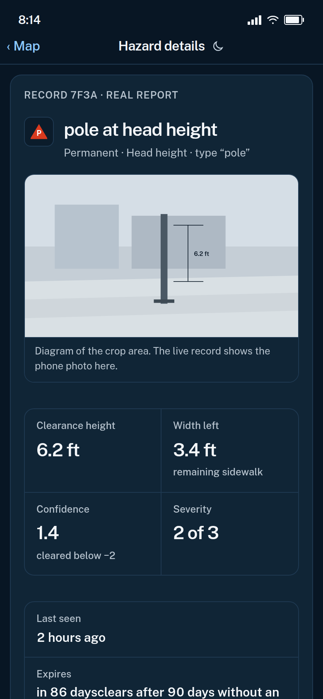
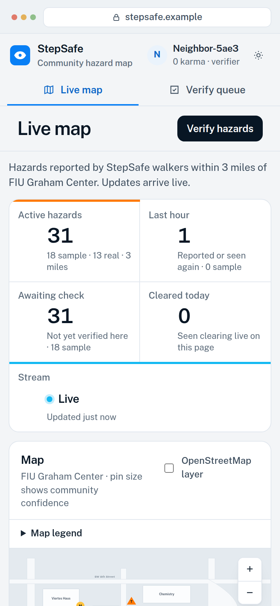
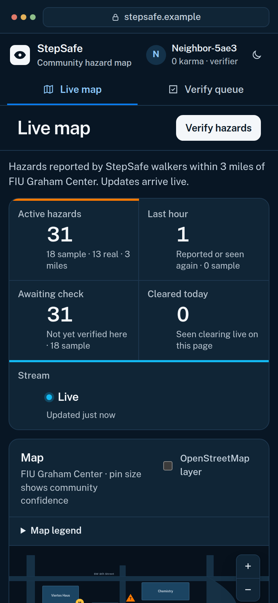
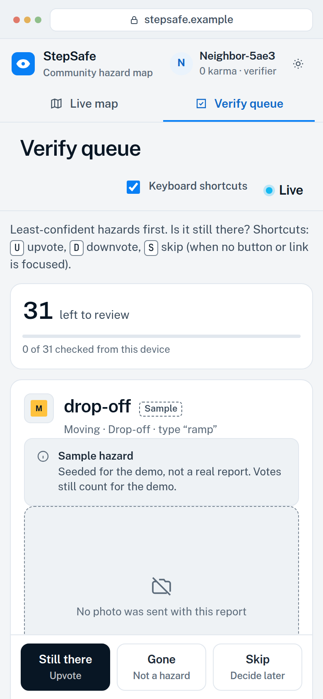
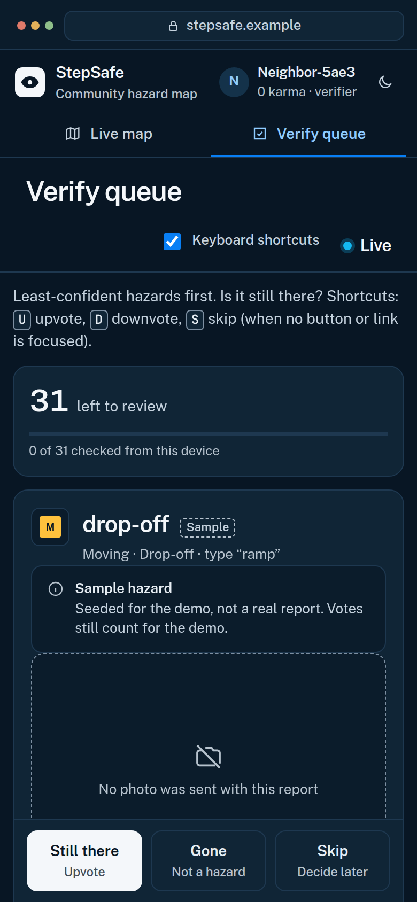
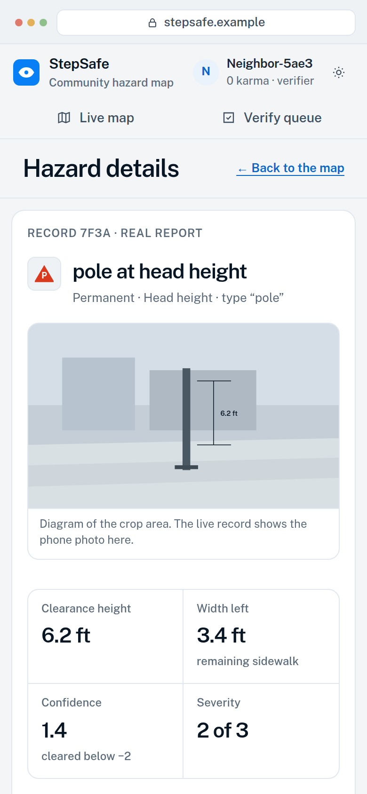
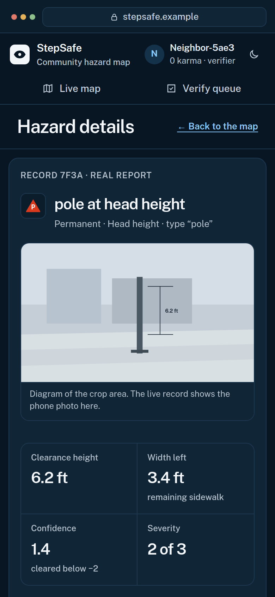
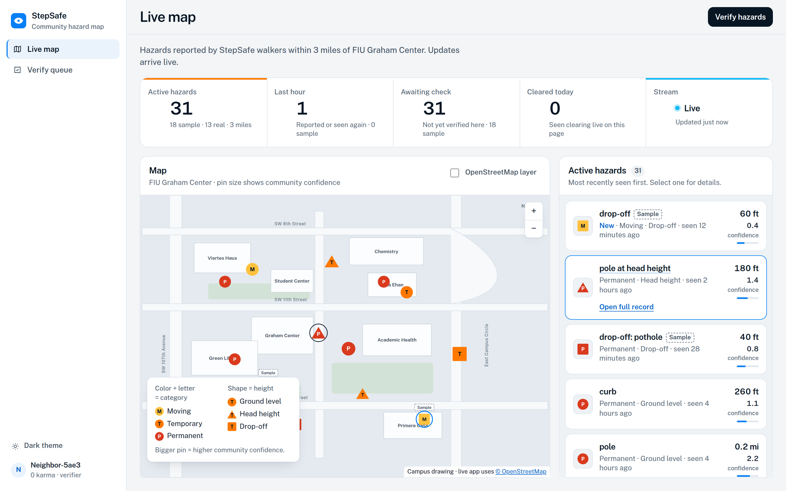
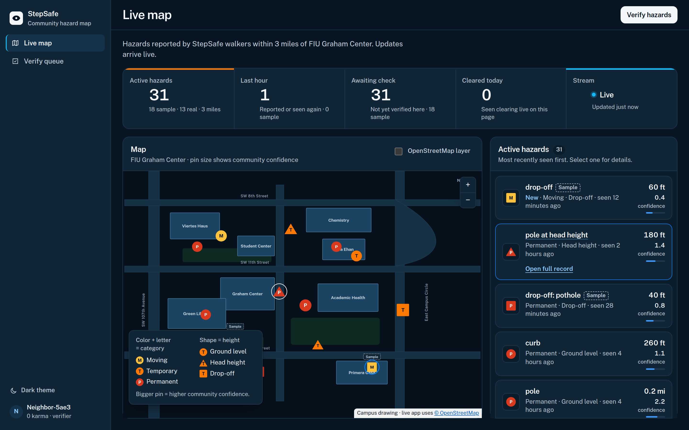
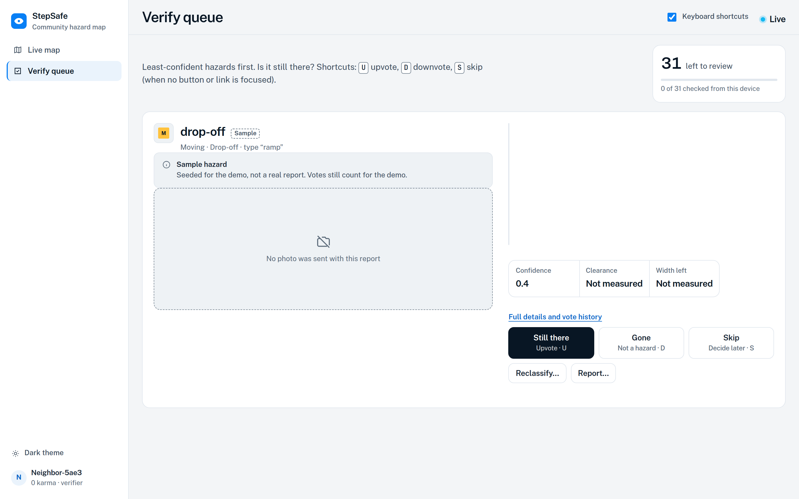
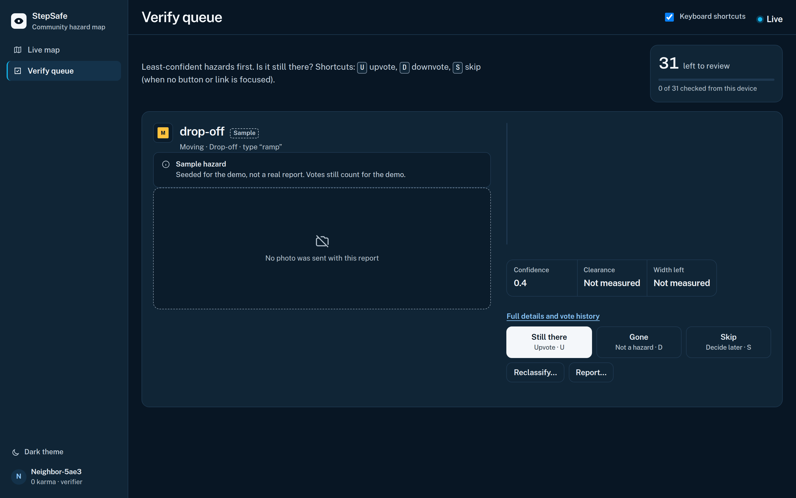
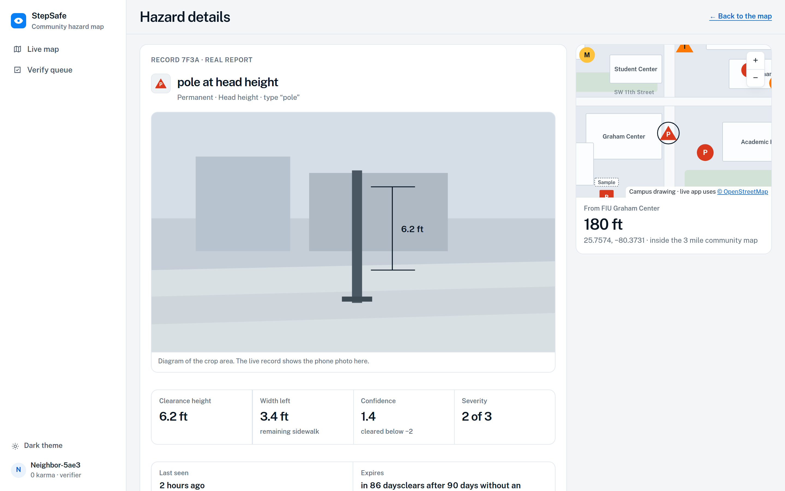
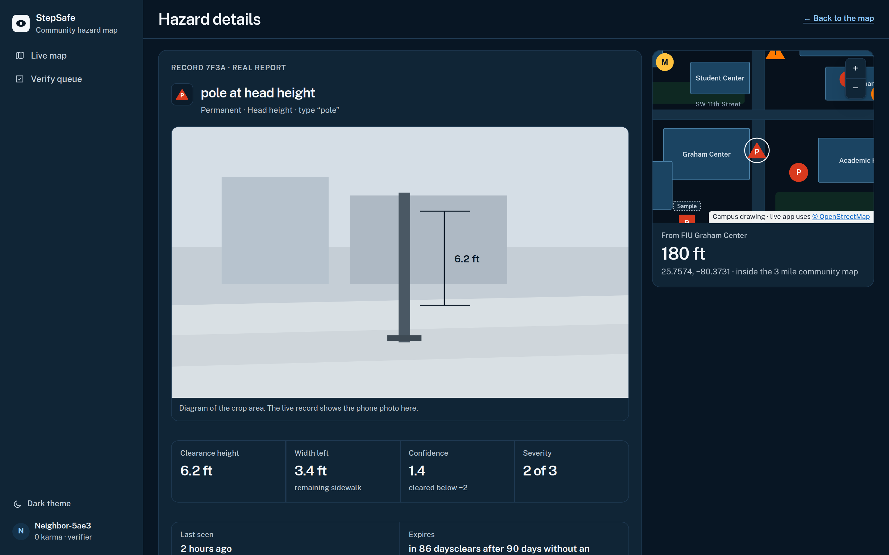